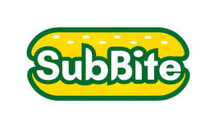

Trade Mark Journal No.2025/037 12 September 2025
UK00004257460 1 September 2025 (30,43)

- Class 30
- Sandwiches; Hamburger sandwiches; Cheeseburgers [sandwiches]; Frankfurter sandwiches; Chicken sandwiches; Turkey sandwiches; Toasted sandwiches; Fish sandwiches; Sandwich wraps [bread]; Toasted cheese sandwich with ham; Sandwiches containing hamburgers; Wrap sandwiches; Toasted cheese sandwich; Hushpuppies [breads]; Sandwiches containing salad; Hamburgers in buns; Open sandwiches; Hamburgers contained in bread buns; Sandwiches containing meat; Wraps [sandwich]; Sandwiches containing chicken; Ice cream sandwiches; Sopapillas [fried pastries]; Pastries, cakes, tarts and biscuits (cookies); Calzones; Pizza pies; Hot dog sandwiches; Filled sandwiches; Bread buns; Bread and buns; Burgers contained in bread rolls; Sopapillas [fried bread]; Pita bread; Sandwiches containing fish; Hamburgers contained in bread rolls; Quiches; Bread biscuits; Danish bread rolls; Pizza sauces; Breads; Bagels; Danish pastries; Bean jam buns; Tortilla snacks; Pastries; Onion or cheese biscuits; Quesadillas; Popadoms; Croissants; Biscuits for cheese; Sandwiches containing minced beef; Flapjacks [griddle cakes]; Pita chips; Hot sausage and ketchup in cut open bread rolls; Sauces for pizzas; Custard-based fillings for cakes and pies; Jam buns; Okonomiyaki [Japanese savoury pancakes]; Hamburgers being cooked and contained in a bread roll; Cream buns; Quiches [tarts]; Savoury pancakes; Chocolate-based fillings for cakes and pies; Sandwiches containing fish fillet; Pizzas; Tacos; Pizza; Breakfast cake; Toasts [biscuits]; Danish bread; Pizza crusts; Viennese pastries; Baozi [stuffed buns]; Kimchi pancakes; Pâté [pastries]; Prepared desserts [pastries]; Okonomiyaki [Japanese savory pancakes]; Crispbread snacks; Savory pastries; Naan bread; Muesli desserts; Scones; Chicken pies; Onion biscuits; Frozen pastries; Meat pies; Pies (Meat -); Salad sauces; Multigrain bread; Nachos; Prepared pizza meals; Cheese balls [snacks]; Danish butter cookies; Buns; Frozen pizza crusts; Savory biscuits; Ice-cream cakes; Samosas; Pancakes; Cheese curls [snacks]; Non-meat pies; Wholewheat crisps; Savoury biscuits; Uncooked pizzas; Waffles; Savory pancakes; Breakfast cereals, porridge and grits; Taco chips; Cheese-flavored biscuits; Chinese stuffed dumplings (gyoza, cooked); Hot breakfast cereals; Pasta for soups; Pasta salad; Burritos; Custards [baked desserts].
- Class 43
- Take-out restaurant services; Restaurant and bar services; Take-away restaurant services; Salad bars [restaurant services]; Fast-food restaurant services; Carry-out restaurants; Grill restaurants; Fast food restaurants; Tourist restaurants; Restaurant services for the provision of fast food; Providing food and drink in restaurants and bars; Food and drink catering; Catering of food and drink; Catering (Food and drink -); Catering of food and drinks; Mobile restaurant services; Eateries; Providing food and drink for guests in restaurants; Self-service restaurant services; Catering in fast-food cafeterias; Food and drink catering for banquets; Serving food and drink in doughnut shops; Food and drink catering for institutions; Restaurant services incorporating licensed bar facilities; Restaurants (Self-service -); Self-service restaurants; Serving food and drink in Internet cafes; Cafe services; Take-away food and drink services; Takeaway food and drink services; Providing food and drink in doughnut shops; Take-away food services; Serving food and drinks; Takeaway food services; Take-away fast food services; Pizza parlors; Salad bars; Snack bar services; Providing food and drink for guests.
Mohammed Arif